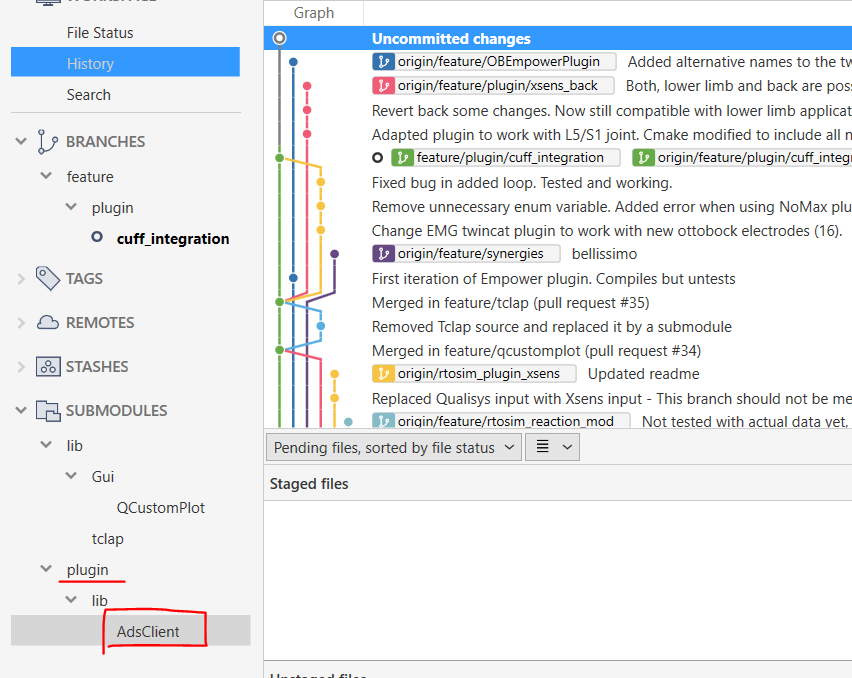
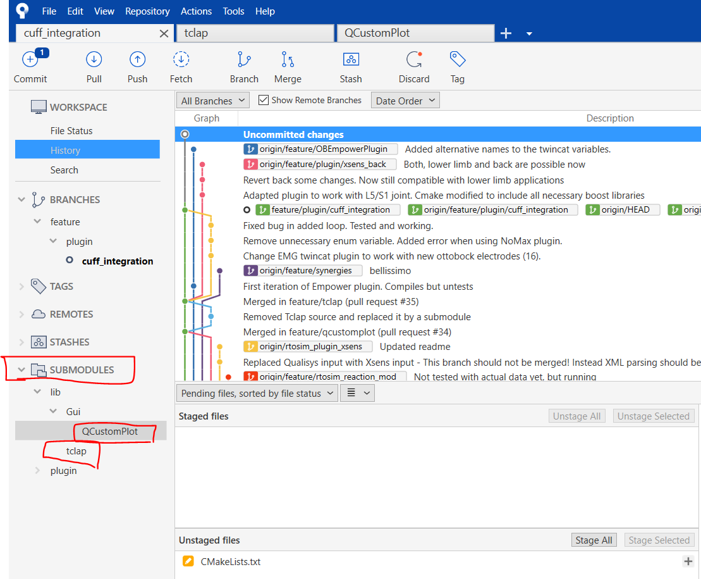
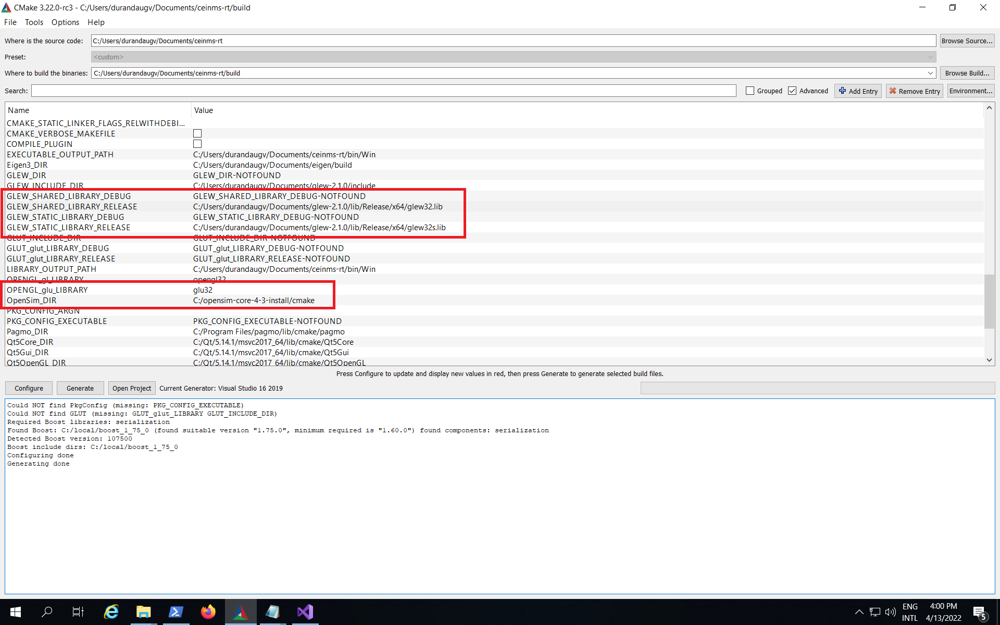
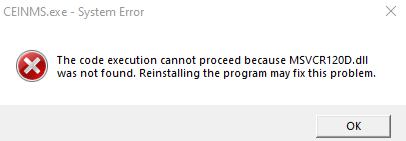

Troubleshooting [Windows]
Contents
When encountering issues with CEINMS, the following solutions might be adequate:
no access to the repository
Make sure you have proper clearance to access the repository. If you don’t have the necessary permissions, you won’t be able to download files. Check with the repository administrators or owners to ensure that you have the required access rights.
If further clearance is needed, you should contact the members of the repository and clarify your intentions for accessing the files. Politely request additional clearance if required, explaining the purpose and reasons behind your request.
Repositories often have specific access control mechanisms in place to protect sensitive or proprietary information. Unauthorized access attempts may be flagged and could lead to account suspension or other penalties.
enter ssh passphrase
If a password for the rsa ssh-key is already in place, try filling in the password. If the password does not get you through, you can change the password
open a command terminal and navigating to C:/Users/<UserName>/.ssh with the cd command. After this, we change the password using the command:
ssh-keygen -p -f id_rsa
You will be prompted to enter the old passphrase, after the old passphrase, you will be prompted to enter a new passphrase. Repeat this new passphrase once more if you require to do so. Now, the passphrase has been updated.
If the old password is unknown, there is no way to change or retieve this password. A new key must be requested or made.
Cannot find the library in ‘tdd12_debug.all’
Add the path of the ‘tdd12_debug.dll’ into the environmental variable path.
For exmaple: C:\Users\WangH\Documents\CEINMS_dependency\oneTBB\build\msvc_19.16_cxx_64_md_debug
Cannot find the cmake files in ‘AdsClient’
Similar to the issue below, this plugin needs to be manually added:
{kind=link}
Cannot find the cmake files in ‘tclap’ and ‘QCustomPlot’
For example:
CMake Error at lib/Gui/CMakeLists.txt:3 (add_subdirectory): The source directory
C:/Users/WangH/Documents/cuff_integration/lib/Gui/QCustomPlot
does not contain a CMakeLists.txt file.
Solution: manually download these two dependencies from bitbucket.
In source_tree, there is an option called ‘SUBMODULES’, you need to double click these two modules to download their source code:
{kind=link}
Cannot open file ‘glew-2.1.0/lib/Release/x64.obj’
The ‘glew32.lib’ and ‘glew32s.lib’ need to be set in the CMake path, as shown below:
{kind=link}
Cannot find the ‘glew32.lib’ or .dll
Add variables CMAKE_PREFIX_PATH in the CMAKE gui specifying the path to the glew folder.
If you still have problems add also the variable GLEW_HOME_DLL and fill it with the path to the .dll file.
Cannot find OpenSim
If using the command line:
-CMAKE_PREFIX_PATH=”C:\pathto\opensim\cmake”
in the GUI see the picture:
Opensim 4.3
- Add:
include_directories(${OPENSIM_ROOT_DIR}/sdk/spdlog/include)
- After:
find_package(OpenSim REQUIRED)
XSD
Compilation
error C2872: ‘DOMDocument’ : ambiguous symbol : in the file:
C:\Program Files (x86)\CodeSynthesis XSD 4.0\include\xsd\cxx\tree\serialization.txx
MSVCR120D
{kind=link}
Follow the instructions here: CEINMS-70 - Authenticate to see issue details
So just download the zip file and copy msvcr120d.dll into C:\Windows\System32. Then, run the command line:
C:\Windows\System32> certutil -hashfile .\msvcr120d.dll
CMake Error at plugin/CMakeLists.txt
The source directory C:/…………./plugin/lib/AdsClient does not contain a CMakeLists.txt file
Type in the terminal: git submodule update –init